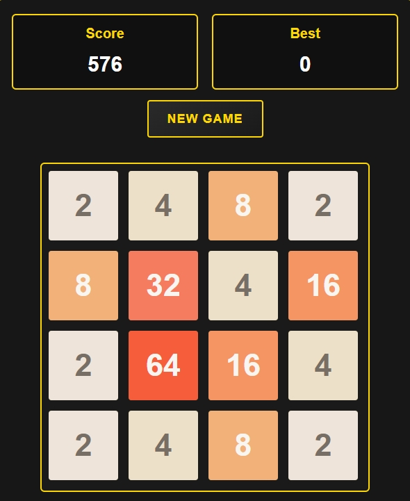

2048

Game Description
2048 is an engaging number puzzle game. In a 4x4 grid, combine identical numbers to reach 2048. The game is simple yet challenging, testing your strategic thinking.
Game Rules
- Use arrow keys to move tiles
- When two tiles with the same number collide, they merge
- After each move, a new tile with value 2 or 4 appears
- Game ends when no moves are possible
- The ultimate goal is to create a tile with the number 2048
Game Tips
- Keep your highest number in a corner
- Maintain a decreasing sequence of numbers
- Avoid scattering small numbers across the board
- Plan your merging paths in advance
Controls
- ↑ : Move Up
- ↓ : Move Down
- ← : Move Left
- → : Move Right